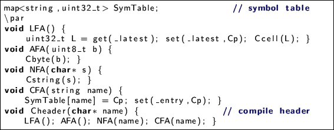

Next: Vocabulary structure Up: Virtual Machine Architecture Previous: Memory Contents

In FORTH term greencompilation means adding bytes to the end of
vocabulary, in fact into the begin of a heap, moving heap bottom to higher
addresses. In FORTH standard there is only HERE word returns address of
the heap begin (it must be HEAP name definitely). So to address we'll use
special Cp register.
These functions will be used in assembler.